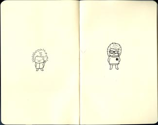
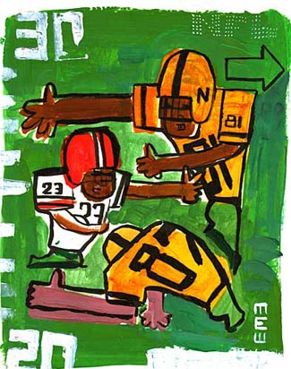
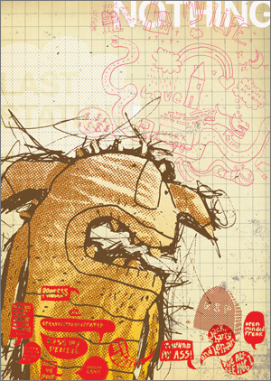
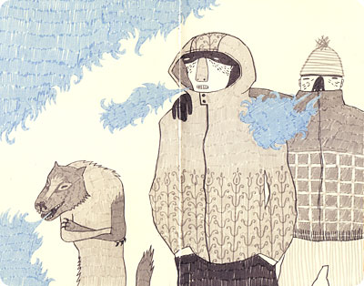
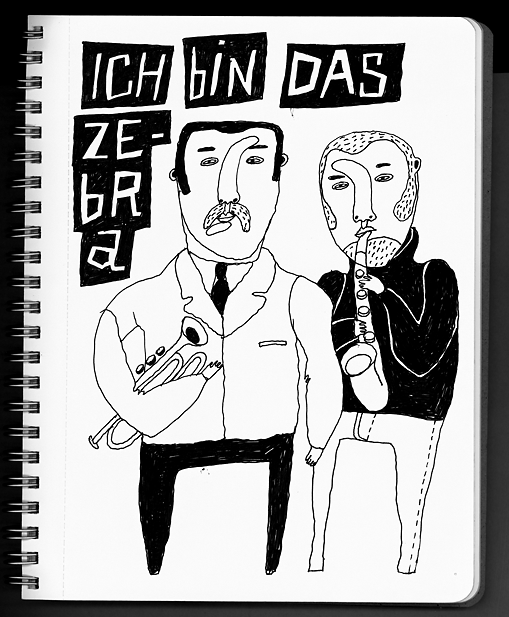
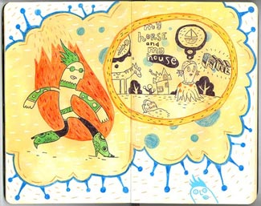
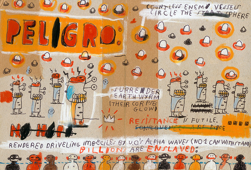
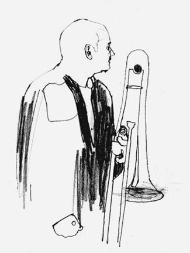
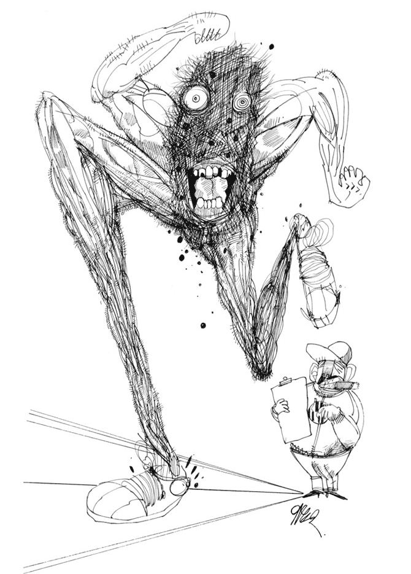

ПРО MOLESKIN
Продолжая разговор о легкости
Легкость, которую может себе позволить современная иллюстрация местами граничит с идиотизмом.

Это хорошая новость для идиотов, но им и так неплохо живется, я считаю.

Легкость это хорошо. Легкость в работе есть непременное условие душевного здоровья, (и пусть кто хоть заикнется о том, что душевное здоровье художнику не пристало). Ужасна иллюстрация, вылизанная до последнего пикселя.

В связи с этим очень кстати всеобщее увлечение скетчбуками moleskin. Сразу отмечу — не рисованием набросков, но дивной красоты и эргономики книжицами, в которую если и решишься что нарисовать, то непременно какую-то сказочную красоту.

Нет, я завидую этим людям ужасно.

Когда я пришел в Британскую школу дизайна, меня попросили показать скетчбуки (слово-то какое, тху, язык сломаешь). Там, как оказалось, к ним относятся очень трепетно — собственно, для английской системы художественного образования скетчбук едва ли не важнее окончательной работы. Во-первых, помогает отслеживать прилежание, а во-вторых, у соседа не срисуешь. То есть срисуешь, но тут уже и не захочешь, а научишься чему-нибудь (об этом я уже говорил). Ну и другие плюсы есть у этой практики. Так вот, еле-еле наскреб я пяток нестрашных листочков. Скетчбуки у меня, при всей моей любви к порядку в рисунке, выглядят как отвратительная каша. Нетоварно выглядят. Сам не всегда могу вспомнить, что это такое я рисовал. Сколько я ни пытался завести красивый скетчбук, без толку. Один раз ошибешься и все насмарку. Кроме прочего я без Ctrl-Z чувствую себя не вполне уверенно, но об этом отдельный разговор.

Уметь надо, как водится. У людей вон даже какая-то каля-маля смотрится.

Повторюсь, уметь — надо. И для этого рисовать наброски, с натуры ли, из головы ли, необходимо, причем постоянно. Если коротко, рисовать — необходимо — постоянно.

Пренебрегая этим простым соображением, художник рискует уподобиться тому, кто простыми движениями — двигая мышью, спуская воду в туалете и т.д., мнит накачать бицепсы. Мне возразят, мол, это еще вопрос, а так уж ли необходимо всем накачивать бицепсы, но я, как уже говорил, считаю основной и конечной задачей искусства (а речь все-таки о нем) удар кулаком в нос. Стало быть, ответ для меня очевиден.
Iain Laurie, Ральф Стедман - XXI

Мне представляется, что в каком-то смысле весь этот хоровод вокруг молескинов есть профанация безусловно полезной идеи скетчбука. Рисуя в скетчбук красоту, художник практикуется не в рисунке, а собственно в иллюстрации, тренируется выдавать с дыханием — товар. Это само по себе очень даже полезно, просто кроме молескина нехудо иметь простую школьную тетрадку, в которую можно рисовать все подряд — и после, отобрав, в молескин срисовывать. И тетрадка эта не в пример будет полезнее. В общем, я считаю, баловство одно ваш молескин. И потом, неужели никому не жалко освежеванных кротов? Ну да, да, я знаю, я завидую, завидую.